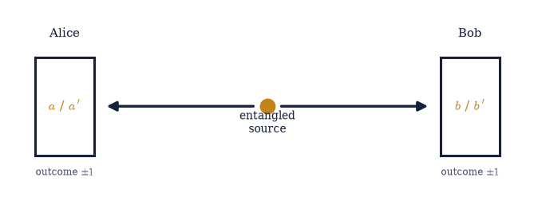
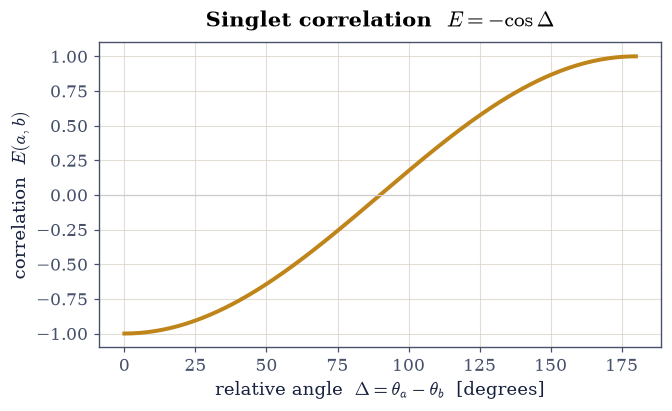
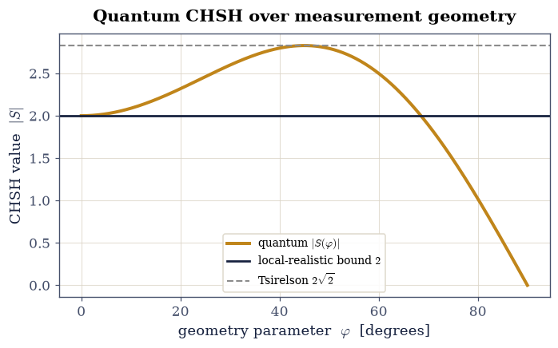
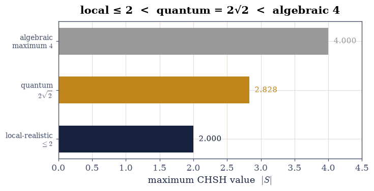
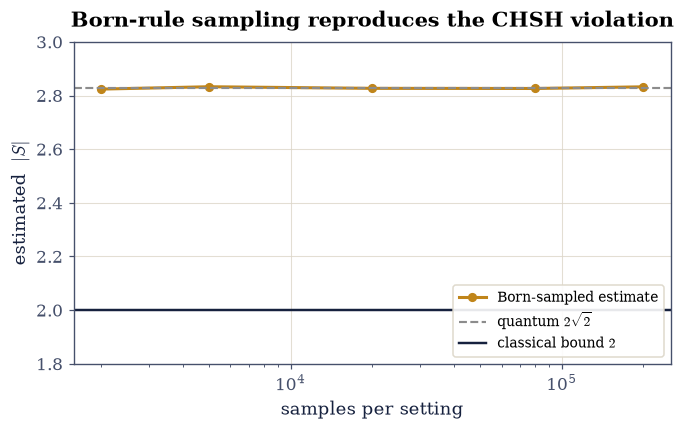

6.25 Bell’s Inequality and the Failure of Local Realism#
Notebook overview#
This notebook opens the final movement — foundations — by making rigorous the puzzle planted in §6.8. There, the Bell state showed perfect correlations in incompatible measurement bases while each particle alone looked random, and we asserted that no local hidden-variable theory could reproduce it. Bell turned that assertion into a theorem with a number.
Einstein, Podolsky, and Rosen believed quantum randomness merely reflected ignorance of “elements of reality” the particles carry all along — hidden variables — and that nature is local (no instantaneous influence at a distance). Bell showed this belief is testable. Send two entangled spins to distant detectors, each set to one of two angles; from the correlations form the CHSH combination \(S=E(a,b)-E(a,b')+E(a',b)+E(a',b')\). Any theory that is both local and realistic must obey \(|S|\le2\) — a bound we will derive in three lines and, more vividly, simulate by building explicit hidden-variable models and watching their correlations never beat 2. Quantum mechanics, computed from the entangled state, gives \(|S|=2\sqrt2\approx2.83\) at the optimal geometry: decisively above the bound. And yet it does not reach the algebraic maximum of 4 either — it stops at Tsirelson’s bound \(2\sqrt2\), more correlated than any classical theory but strictly less than logic alone would allow.
The distinctive computational move here is to build the classical model and watch it fail: a Monte Carlo of local hidden-variable strategies that never exceeds 2, set against the quantum value that does. We then simulate a real Bell test by sampling outcomes from the Born rule (§6.4), and close with an honest, evenhanded account of what the violation does and does not establish.
Interpretive care. We separate cleanly what is demonstrated — quantum mechanics violates a bound that every local-realistic theory obeys, and experiments confirm it — from what is interpreted, which is genuinely contested. The honest conclusion is “local realism fails,” not “reality is an illusion.” We state the assumptions, note the theorem rules out local (not nonlocal) hidden variables, and present the interpretations without taking a side.
Method specificity. The spin operators are \(\cos\theta\,\sigma_z+\sin\theta\, \sigma_x\); the quantum correlator \(\langle\psi|A\otimes B|\psi\rangle\) uses
numpy.kronandnumpy.vdot; the hidden-variable Monte Carlo and the Born-rule sampling usenumpy.random.default_rng.
Theory in brief#
The CHSH setup#
Two entangled spins fly to Alice and Bob. Alice measures along one of two angles (\(a\) or \(a'\)), Bob along one of two (\(b\) or \(b'\)); each outcome is \(\pm1\). Over many pairs the correlation for a setting pair is \(E(a,b)=\langle(\text{Alice}) (\text{Bob})\rangle\), and the CHSH quantity is
The local-realistic bound (Bell / CHSH)#
In any local hidden-variable theory each particle carries pre-assigned outcomes \(A(\cdot,\lambda),B(\cdot,\lambda)=\pm1\), with locality (Alice’s outcome does not depend on Bob’s setting). Then for each \(\lambda\)
because one bracket vanishes and the other is \(\pm2\). Averaging over \(\lambda\) gives \(|S|\le2\) — the CHSH inequality, a constraint every local-realistic theory obeys [Bel64, CHSH69].
The quantum prediction#
For the entangled (singlet) state the correlation is \(E(a,b)=\langle\psi|A\otimes B|\psi\rangle=-\cos(\theta_a-\theta_b)\). At the optimal geometry \(a=0,\ a'=\pi/2,\ b=\pi/4,\ b'=3\pi/4\),
Quantum correlations are stronger than any local theory permits.
Tsirelson’s bound#
Remarkably, quantum mechanics does not reach the algebraic maximum of 4. It stops at \(2\sqrt2\) — squaring the CHSH observable leaves \(4\) plus a commutator term whose norm is at most \(4\) (Nielsen & Chuang pose the computation as Tsirelson’s inequality among the Chapter 2 problems):
More correlated than any classical theory, strictly less than logically possible — a limit that is itself a deep feature of the theory.
What is demonstrated, and what is interpreted#
The demonstrated fact is that quantum mechanics violates a bound obeyed by every local-realistic theory, and that experiments confirm the quantum prediction (Aspect 1982 [ADR82]; the loophole-free tests of 2015 [HBDreau+15]; the 2022 Nobel Prize to Aspect, Clauser, and Zeilinger).
What this means needs care. The theorem rules out local hidden variables but not nonlocal ones (Bohmian mechanics reproduces quantum mechanics by being explicitly nonlocal), and it does not permit faster-than-light signalling — the marginals stay random (the no-signalling theorem). The interpretations (Copenhagen, many-worlds, Bohmian, and others) accept different horns; we present them without adjudicating. The honest conclusion is “local realism fails,” not “reality is an illusion.”
Reference: Bell [Bel64]; CHSH [CHSH69]; Aspect et al. [ADR82]; the loophole-free experiments [HBDreau+15]; Nielsen & Chuang [NC10]. Cross-reference §6.8 (the Bell state, entanglement, the puzzle posed), §6.6 (incompatible observables), §6.5 (the Born rule), §6.4 (Born-rule Monte Carlo), and forward to §6.26 (the density matrix), §6.27 (quantum information). Named as horizons: GHZ states, the detection and locality loopholes, device-independent quantum cryptography.
Setup#
We use the qubit form of CHSH: two spin-\(\tfrac12\) particles in the singlet
state \(|\psi^-\rangle=(|01\rangle-|10\rangle)/\sqrt2\), each measured along an axis
in the \(x\)–\(z\) plane at angle \(\theta\), with outcomes the \(\pm1\) eigenvalues of the
spin operator. The data are the Pauli matrices of §6.6, that
singlet state (§6.8), the four optimal CHSH angles, and the
measurement observable \(A(\theta)=\cos\theta\,\sigma_z+\sin\theta\,\sigma_x\) — a transcription
of its displayed definition, and the given input every result below is written in terms of.
The one instrument is the eigenvector extraction that turns that observable into its two
outcome states, a numpy.linalg.eigh call and a column convention. Conventions: angles in
radians; numpy.kron puts Alice’s qubit first.
The objects this notebook is named for are deliberately absent: you write the quantum
correlation correlation in Exercise 1, the local hidden-variable model lhv_chsh in
Exercise 3, the CHSH combination chsh in Exercise 4, and the Born-rule sampler
born_sampled_correlation in Exercise 7.
The Setup below holds this notebook’s data and instruments — nothing you are asked to build. It is collapsed so the building stays yours; expand it whenever you want the details.
Exercise 1 — The entangled pair and its correlations#
A source emits two spin-\(\tfrac12\) particles in the singlet state
\(|\psi^-\rangle=(|01\rangle-|10\rangle)/\sqrt2\) (§6.8); Alice measures hers
along \(\theta_a\), Bob his along \(\theta_b\), each reading off a \(\pm1\) eigenvalue of
\(A(\theta)=\cos\theta\,\sigma_z+\sin\theta\,\sigma_x\). Both the state and that observable are
given in the Setup. What is not given is the single number this whole notebook turns on: the
correlation \(E(a,b)=\langle\psi|A(\theta_a)\otimes B(\theta_b)|\psi\rangle\), the average of
the product of the two outcomes. On the two-qubit space the joint observable is a Kronecker
product, numpy.kron with Alice’s factor first (the §6.8 index convention), and
the expectation is one numpy.vdot, real because the operator is Hermitian. The singlet’s
answer is the cosine law \(E(a,b)=-\cos(\theta_a-\theta_b)\): perfect anticorrelation at equal
angles, none at \(90^\circ\), perfect correlation at \(180^\circ\), and — because the singlet is
rotationally invariant — a function of the relative angle alone. These are exactly the
correlations EPR argued must come from values the particles carried all along.
Write
correlation(tA, tB, state=SINGLET): form \(A(\theta_a)\otimes B(\theta_b)\) withnumpy.kronon twospin_operatorcalls, and return the real part ofnumpy.vdot(state, op @ state).Evaluate it on a handful of angle pairs, equal angles and a quarter turn among them.
Confirm each value equals \(-\cos(\theta_a-\theta_b)\).
Scan the relative angle over \([0,\pi]\) and plot the cosine it traces out.

Fig. 592 The Bell-test geometry. A source emits an entangled pair; one spin flies to Alice, the other to Bob, far enough apart that no signal can pass between the measurements. Each freely chooses one of two analyzer angles (\(a\) or \(a'\) for Alice, \(b\) or \(b'\) for Bob) and records a \(\pm1\) outcome. From many such pairs one builds the four correlations \(E(a,b),\dots\) and the CHSH combination. The whole of Bell’s argument is about how correlated these two distant, independently-chosen measurements can be.#
singlet correlations E(a,b) vs −cos(θa−θb):
E(0.000, 0.000) = -1.00000 −cos(Δ) = -1.00000
E(0.000, 0.785) = -0.70711 −cos(Δ) = -0.70711
E(1.047, 0.449) = -0.82624 −cos(Δ) = -0.82624
E(0.000, 1.571) = -0.00000 −cos(Δ) = -0.00000

Fig. 593 The singlet correlation. Measuring both spins along axes separated by an angle \(\Delta=\theta_a-\theta_b\) gives the correlation \(E=-\cos\Delta\) (amber), computed as \(\langle\psi|A\otimes B|\psi\rangle\): perfect anticorrelation (\(E=-1\)) at equal angles, no correlation at \(90^\circ\), perfect correlation at \(180^\circ\). These are exactly the correlations EPR argued must come from pre-assigned values — the claim Bell made testable.#
Validation 1#
The singlet correlation must equal \(-\cos(\theta_a-\theta_b)\) for every pair of angles: anticorrelated at equal settings, and the cosine law in between.
✓ the singlet correlation is E(a,b) = −cos(θ_a − θ_b) [max|Δ| = 2.22045e-16 (rtol=1e-09, atol=1e-09)]
True
Exercise 2 — Deriving the CHSH bound for local realism#
In a local hidden-variable theory the particles carry their answers with them: a shared \(\lambda\), fixed at the source, determines \(A(a,\lambda),A(a',\lambda),B(b,\lambda), B(b',\lambda)\), each \(\pm1\), and locality means Alice’s value never depends on Bob’s setting. For a single \(\lambda\) the CHSH combination is then the algebraic expression \(S(\lambda)=A(a)[B(b)-B(b')]+A(a')[B(b)+B(b')]\) Eq. 632. Since \(B(b)\) and \(B(b')\) are each \(\pm1\), one bracket vanishes and the other is \(\pm2\), so \(S(\lambda)=\pm2\) for every \(\lambda\) — and averaging over \(\lambda\) gives \(|\langle S\rangle|\le2\), the CHSH inequality. That is three lines of algebra, but a deterministic hidden variable fixes only four signs, so there are just \(2^4=16\) possible answer sets: the claim can be checked by exhaustion rather than believed.
Enumerate all 16 sign assignments of \(A(a),A(a'),B(b),B(b')\).
Evaluate \(S(\lambda)\) for each.
Confirm every value is \(\pm2\), so any average over \(\lambda\) obeys \(|S|\le2\).
Cite Eq. 632.
distinct values of S(λ) over all 16 pre-assignments: [np.int64(-2), np.int64(2)]
every |S(λ)| = 2, so any average obeys |⟨S⟩| ≤ 2 (max = 2)
Validation 2#
For every pre-assignment of outcomes, \(S(\lambda)=\pm2\); therefore any average over \(\lambda\) satisfies the CHSH bound \(|S|\le2\).
✓ S(λ) = ±2 for every hidden-variable assignment, so any local-realistic theory obeys the CHSH bound |S| ≤ 2
True
Exercise 4 — The quantum violation#
Everything is now in place for the confrontation. The quantity Bell bounded is the four-term
combination \(S=E(a,b)-E(a,b')+E(a',b)+E(a',b')\) Eq. 631 — one minus sign among
four correlations, and no local theory can push its magnitude past 2. Quantum mechanics
supplies the four correlations from the singlet, and the geometry that extracts the most from
them is the equally-fanned one, \(a=0,\ a'=\pi/2,\ b=\pi/4,\ b'=3\pi/4\) (the Setup’s OPTIMAL),
where each of the four relative angles is \(45^\circ\) or \(135^\circ\) and every term contributes
\(1/\sqrt2\) in magnitude. The result is \(|S|=2\sqrt2\approx2.83\): past the bound, and past it
by a margin no experimental care could explain away. The singlet is anticorrelated, so the
signed value comes out \(-2\sqrt2\); the physical statement is the CHSH one, \(|S|\le2\), and it is
the magnitude that breaks it.
Write
chsh(state, a, ap, b, bp), returning \(E(a,b)-E(a,b')+E(a',b)+E(a',b')\) from four calls to thecorrelationyou wrote in Exercise 1.Evaluate it on the singlet at the optimal angles.
Confirm \(|S|=2\sqrt2\), and report by how much the local-realistic bound is exceeded.
Cite Eq. 633.
quantum CHSH at optimal angles: S = -2.82843
|S| = 2.82843 2√2 = 2.82843
local-realistic bound is |S| ≤ 2 → violated by 0.828
Validation 4#
At the optimal geometry the quantum CHSH magnitude must equal \(2\sqrt2\), decisively above the local-realistic bound of 2.
✓ quantum mechanics gives |S| = 2√2 ≈ 2.83, violating the local-realistic bound of 2 [got 2.82843 vs expected 2.82843 (rtol=1e-06, atol=1e-09)]
True
Exercise 5 — The angle scan#
One number at one special geometry invites the suspicion that the violation is a knife-edge — a coincidence of four carefully chosen angles that a real apparatus, with its imperfect alignment, would miss. The way to settle that is to vary the geometry. The optimal arrangement belongs to a one-parameter family, \(a=0,\ a'=2\varphi,\ b=\varphi,\ b'=3\varphi\): four settings equally fanned by \(\varphi\), with the optimum at \(\varphi=\pi/4\), the \(22.5^\circ\) spacing. Sweeping \(\varphi\) across the family traces \(|S(\varphi)|\) from the classical region up through the bound and back, and the fraction of the sweep that sits above 2 measures how forgiving the effect is.
Scan \(\varphi\) over \([0,\pi/2]\), evaluating \(|S(\varphi)|\) on that family with the
chshyou wrote in Exercise 4.Locate the peak and confirm it is \(2\sqrt2\) at \(\varphi=\pi/4\).
Report the fraction of the scan with \(|S|>2\) — the violation is robust, not fine-tuned.
Cite Eq. 633.
max |S| over scan = 2.82841 at φ = 0.7834 (π/4 = 0.7854)
fraction of geometries with |S| > 2 = 75.8%

Fig. 595 The violation is robust. Scanning the measurement geometry, the quantum CHSH value \(|S|\) (amber) rises above the local-realistic bound of 2 (grey) over about three-quarters of all arrangements, and peaks exactly at Tsirelson’s bound \(2\sqrt2\) (dashed) at the optimal \(22.5^\circ\) geometry. The quantum violation is not a fine-tuned coincidence at one special angle — it is generic. Nowhere does \(|S|\) exceed \(2\sqrt2\).#
Validation 5#
The scanned quantum CHSH value must peak at \(2\sqrt2\) and exceed 2 over a broad range of geometries (not a single fine-tuned point).
✓ the CHSH value peaks at 2√2 for the optimal geometry and exceeds 2 broadly [got 2.82841 vs expected 2.82843 (rtol=0.001, atol=1e-09)]
✓ the quantum violation |S|>2 holds over most of the scan (robust)
True
Exercise 6 — Tsirelson’s bound#
The scan of Exercise 5 has a second lesson hidden in it, and it points the other way. Nothing in arithmetic stops \(S\) at \(2\sqrt2\): each of the four correlations lies in \([-1,1]\), so if they could be chosen freely the combination would reach 4, and a hypothetical super-quantum theory obeying only no-signalling would do exactly that. Quantum mechanics does not. Squaring the CHSH observable leaves \(4\) plus a commutator term whose norm is at most \(4\), which caps \(|S|\) at \(2\sqrt2\) — Tsirelson’s bound Eq. 634, and the scan saturates it without ever crossing it. The ordering that results, local-realistic \(\le2<\) quantum \(\le2\sqrt2<\) algebraic 4, says quantum correlations are stronger than any classical theory permits and strictly weaker than logic alone would allow. Why nature stops precisely there is still an open research question.
Take the maximum of the quantum scan from Exercise 5 and compare it to \(2\sqrt2\).
Confirm it never exceeds that bound.
Set the three ceilings — 2, \(2\sqrt2\), and the algebraic 4 — side by side.
Cite Eq. 634.
quantum maximum over the scan: 2.82841 ≤ Tsirelson 2√2 = 2.82843
ordering: local-realistic ≤ 2 < quantum ≤ 2√2 ≈ 2.83 < algebraic 4

Fig. 596 Three tiers of correlation. Any local-realistic theory is confined to \(|S|\le2\) (grey); quantum mechanics reaches exactly \(2\sqrt2\approx2.83\) (amber) and no further; the algebraic maximum, which a hypothetical super-quantum theory could attain, is 4. Quantum correlations are strictly stronger than any classical theory allows, yet strictly weaker than logic alone would permit — and why nature stops precisely at Tsirelson’s bound is still studied.#
Validation 6#
The quantum CHSH value must never exceed \(2\sqrt2\): quantum mechanics respects Tsirelson’s bound, sitting strictly between the classical bound and the algebraic maximum.
✓ the quantum CHSH value never exceeds 2√2 (Tsirelson): local ≤2 < quantum ≤2√2 < 4
True
Exercise 7 — Simulating the actual experiment (student)#
Every \(S\) computed so far has been an expectation value — an exact average over an infinite
ensemble, which no laboratory has. A real Bell test counts coincidences: pair after pair,
each arriving with one of the four joint outcomes \((\pm1,\pm1)\), tallied at four analyzer
settings until the four correlations are known well enough. Reproducing that means sampling
rather than averaging. The joint outcome probabilities come from the Born rule
(§6.5): with \(|a_\pm\rangle\) and \(|b_\pm\rangle\) the two parties’ outcome eigenstates
(the Setup’s _outcome_bases), the probability of the pair \((s_a,s_b)\) is
\(|\langle a_{s_a}b_{s_b}|\psi\rangle|^2\), and the correlation is the sample mean of the
product \(s_as_b\) over \(n\) draws — the Born-rule Monte Carlo of §6.4 lifted from one
qubit to two. Finite \(n\) means a statistical error \(\sim1/\sqrt n\), so the honest presentation
is not one number but a convergence: the estimate settling onto \(2\sqrt2\) as the counts grow,
with the classical bound receding by more and more standard errors. That is what Aspect
measured in 1982 and what the loophole-free tests of 2015 measured with the loopholes shut.
Write
born_sampled_correlation(tA, tB, n, rng, state=SINGLET): build the four joint outcome probabilities from_outcome_basesandnumpy.kron, normalize them, draw \(n\) outcome pairs withrng.choice, and return the mean of the outcome products. Write this one yourself — the implementation is the lesson.Estimate the four correlations at the optimal settings and assemble \(|S|\) from them, for a ladder of sample sizes.
Confirm \(|S|\approx2\sqrt2\) within statistical error at the largest sample size.
Cite Eq. 633.
Born-sampled |S| (N=200000/setting) = 2.8325 target 2√2 = 2.8284

Fig. 597 A simulated Bell test. Sampling \(\pm1\) outcomes from the Born rule (§6.4) and estimating the four correlations from finite data reproduces the CHSH value: as the number of sampled pairs grows, the estimate (amber) converges to the quantum \(2\sqrt2\) (dashed), safely above the classical bound of 2 (grey). This is exactly what a real experiment does — count coincidences at four analyzer settings — and what Aspect (1982) and the loophole-free tests (2015) measured, honored by the 2022 Nobel Prize.#
Validation 7#
Born-rule sampling of the entangled state must reproduce the CHSH violation: \(|S|\approx2\sqrt2\) within statistical error, and comfortably above 2.
✓ Born-rule sampling of the entangled state reproduces the CHSH violation (≈2√2) [got 2.83251 vs expected 2.82843 (rtol=1e-06, atol=0.05)]
True
Exercise 8 — What must give way (student / interpretation)#
The violation is a fact; what it costs is a question. Bell’s derivation rests on three assumptions, and the experiment refutes their conjunction, not any one of them: locality (an outcome depends only on the local setting and the shared past), realism (outcomes are determined by pre-existing values), and measurement independence (the settings are chosen freely, independently of \(\lambda\)). At least one must fail. What fails is local hidden variables, not hidden variables as such — Bohmian mechanics reproduces every quantum prediction by being explicitly nonlocal, and pays for it exactly there. What does not fail is relativity, and the reason is worth checking rather than asserting: the correlations are invisible to either party alone. Alice’s marginal probability of a \(+1\) outcome is obtained by summing the joint Born probabilities over Bob’s two outcomes Eq. 635, and for the singlet it is \(1/2\) whatever Bob does — so nothing Bob chooses can be read off Alice’s data, and no signal passes. Which assumption to surrender is where Copenhagen, many-worlds and Bohmian mechanics part ways, and this notebook takes no side; the honest conclusion is “local realism fails,” not “reality is an illusion.”
Write
alice_marginal(tA, tB), summing \(|\langle a_+b_\pm|\psi\rangle|^2\) over Bob’s two outcome states to give \(P(\text{Alice}=+1)\) with Bob measuring at \(\theta_b\).Evaluate it at a fixed \(\theta_a\) for several of Bob’s settings.
Confirm every value is \(1/2\): Alice learns nothing about Bob’s setting, so the violation forbids local realism without permitting faster-than-light communication.
Cite Eq. 635.
P(Alice=+1) for Bob's settings [0, π/4, π/2, 1.234]:
['0.500000', '0.500000', '0.500000', '0.500000']
→ all 0.5: Alice learns nothing about Bob's setting (no signalling)
Validation 8#
Alice’s single-party marginal must be independent of Bob’s distant setting (always \(1/2\)): the violation defeats local realism but forbids signalling — the marginals carry no information.
✓ the single-party marginals are 1/2 regardless of the distant setting (no signalling: the violation forbids local realism, not relativity) [max|Δ| = 2.22045e-16 (rtol=1e-06, atol=1e-09)]
True
Exercise 9 — (Synthesis) A number that decided a debate#
For thirty years the question of whether quantum randomness hid a deeper, local, deterministic layer was thought to be metaphysics, beyond experiment. Bell turned it into arithmetic: a single number, bounded by 2 for any local-realistic world, predicted to be \(2\sqrt2\) by quantum mechanics. We built the local model and watched it strain against the bound and fail — no strategy, however clever, beat 2. We computed the quantum value and watched it pass, at \(2\sqrt2\approx2.83\). And we found that quantum mechanics, for all its strangeness, stops short of the maximum imaginable: more correlated than any classical theory, less than logic alone would allow. Born-rule sampling reproduced the violation from simulated coincidence counts, exactly as a real experiment does.
It is worth pausing on how unusual this is. A philosophical dispute between Einstein and Bohr about the nature of reality was settled — not dissolved, settled — by a table of measured coincidence counts. Aspect’s 1982 experiment, the loophole-free tests of 2015, and the 2022 Nobel Prize confirm it: the correlations of the Bell state are real, they defeat local realism, and no experiment has ever sided against them. What remains open is not whether quantum mechanics is right but what it means — and on that, the honest word is that at least one of locality, realism, or free choice must go, while the no-signalling theorem keeps the whole thing consistent with relativity. Which assumption to surrender is where Copenhagen, many-worlds, and Bohmian mechanics part ways, and this notebook takes no side.
With that, Movement VI is open — the foundations, where we ask not how to compute with quantum mechanics but what it is telling us. The next notebook (§6.26) steps back to ask what “the state of a subsystem” even means when parts are entangled like this: the density matrix, the proper description of the mixed, correlated pieces that Bell pairs are made of.
Notebook summary#
The singlet correlations Eq. 631: \(E(a,b)=-\cos(\theta_a- \theta_b)\), computed as \(\langle\psi|A\otimes B|\psi\rangle\) (
numpy.kron/vdot).The CHSH bound Eq. 632: \(S(\lambda)=\pm2\) for every pre-assignment, so any local-realistic theory obeys \(|S|\le2\) (derived + brute-checked).
The local model fails: hundreds of simulated hidden-variable strategies (
numpy.random.default_rng) never beat 2.The quantum violation Eq. 633: \(|S|=2\sqrt2\approx2.83\) at the optimal angles, exceeding 2 over ~76% of geometries.
Tsirelson Eq. 634: quantum \(|S|\le2\sqrt2<4\) — strong but not maximal.
The experiment, simulated: Born-rule sampling reproduces \(|S|\approx2\sqrt2\); the marginals stay \(1/2\) (no signalling). The honest conclusion: local realism fails.
What is settled, and what is not. Settled: quantum mechanics violates a bound every local-realistic theory obeys, and experiment agrees. Open: which assumption to give up, and what the violation means. This notebook demonstrates the first and lays out the second without adjudicating.
Outlook#
The density matrix and mixed states (§6.26): the proper description of a subsystem of an entangled pair.
Quantum information and device-independent cryptography (§6.27), where Bell violations certify security.
GHZ states: a single-measurement, all-or-nothing version of the contradiction (a horizon).
The loopholes (detection, locality, freedom-of-choice) and the loophole-free experiments (a horizon).
Cross-reference §6.8 (the Bell state, entanglement), §6.6 (incompatible observables), §6.5 (the Born rule), §6.4 (Born-rule Monte Carlo), forward to §6.26, §6.27.
References#
Alain Aspect, Jean Dalibard, and Gérard Roger. Experimental test of Bell's inequalities using time-varying analyzers. Physical Review Letters, 49(25):1804–1807, 1982.
J. S. Bell. On the Einstein Podolsky Rosen paradox. Physics Physique Fizika, 1(3):195–200, 1964.
John F. Clauser, Michael A. Horne, Abner Shimony, and Richard A. Holt. Proposed experiment to test local hidden-variable theories. Physical Review Letters, 23(15):880–884, 1969.
B. Hensen, H. Bernien, A. E. Dréau, and others. Loophole-free Bell inequality violation using electron spins separated by 1.3 kilometres. Nature, 526(7575):682–686, 2015.
Michael A. Nielsen and Isaac L. Chuang. Quantum Computation and Quantum Information. Cambridge University Press, 10th anniversary edition, 2010.